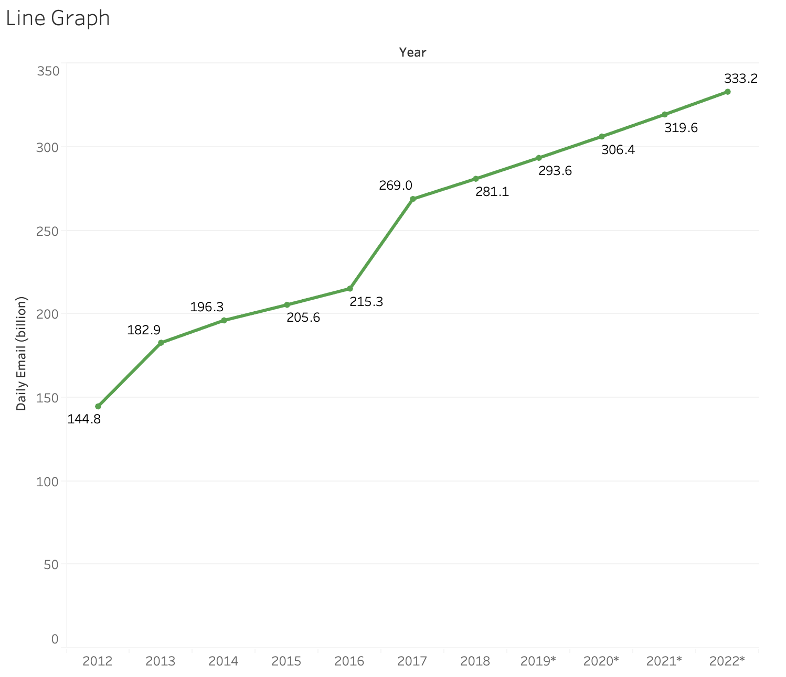
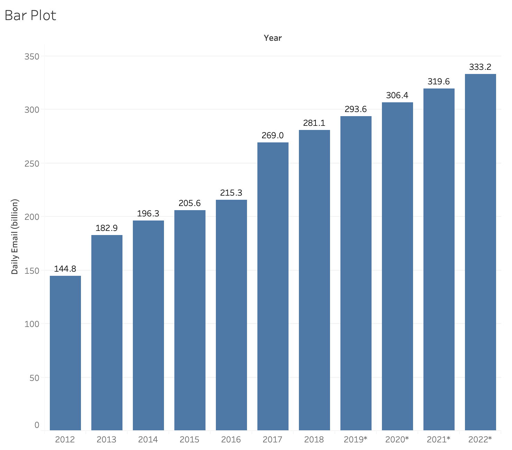
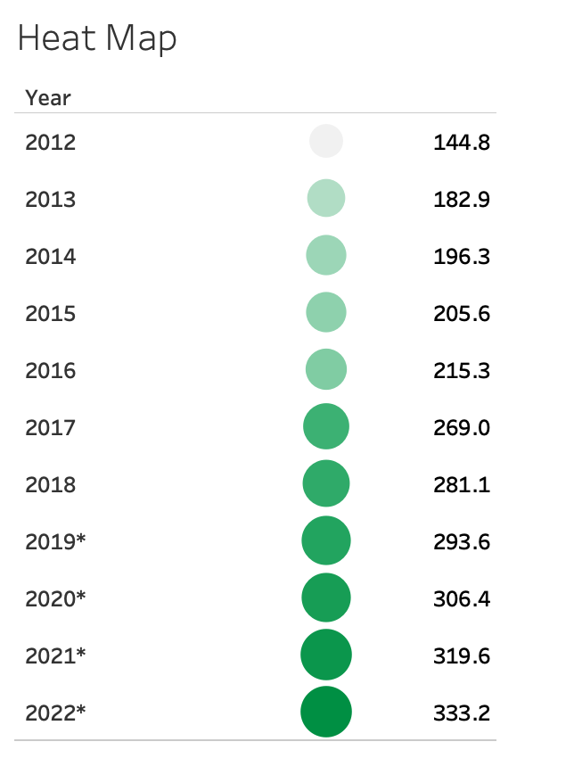

Mini Project 1
Mooyeong Lee, Ga Young Lee, Sung Joon Park
Good Visualization 1

Bad Visualization 1

Best Redesign

The biggest problem of the previous visualization was that it did not have correct scaling and that there were predicted data. Also, the whole purpose of the visualization was to show that the number of daily emails is on the rise. To address these problems, I created a line graph that clearly shows the rising trend. The number of emails each year is labeled, and the y-axis starts at 0 to prevent any misguidance of the scale. I was able to find the actual dataset that the visualization was made of, so I included more years for better comparison, and put a * mark next to the years that have predicted data instead of collected ones. This captures the rising trend at once and allows the viewers to compare the values across years with the labeled values on top of each dots. A trade-off of using a line graph instead of a bar chart would be that it emphasizes more on the general trend than the individual values, so it would be less appropriate when the purpose is to compare each value per year.
Other Redesign 1
Other Redesign 2
Good Visualization 2

Bad Visualization 2

Best Redesign

Here I used Line graph as a design choice. I encoded dates in x-axis and the number of COVID 19 cases in y-axis . Although the redesign shares the same design choice, it differs as it has correct scaling over both y-axis and x-axis. With correct scaling, the redesign improves upon the original by providing accurate representation of data trends in the graph. As there is a lack of consistent data, the connecting lines between the labels could be misleading. However, as the visualization’s main purpose is to show the trend, I believe line chart is the best option in this circumstance.
Other Redesign 1

Other Redesign 2

Good Visualization 3

Bad Visualization 3

Best Redesign

I chose a double bar chart as a design and encoded traits as a x-axis and the percentage as a y-axis. Also, specific percentages are labeled in each bar for clarification. Compared to the original design, the double bar chart has correct proportions and scaling. The original chart had stick-figured design and color coordinations that could attract the audience. However, with correct proportions and scaling, the redesign provides accurate representation of percentages. Also, it is easier for the audience to compare the two different perceptions on each of the traits.
Other Redesign 1

Other Redesign 2